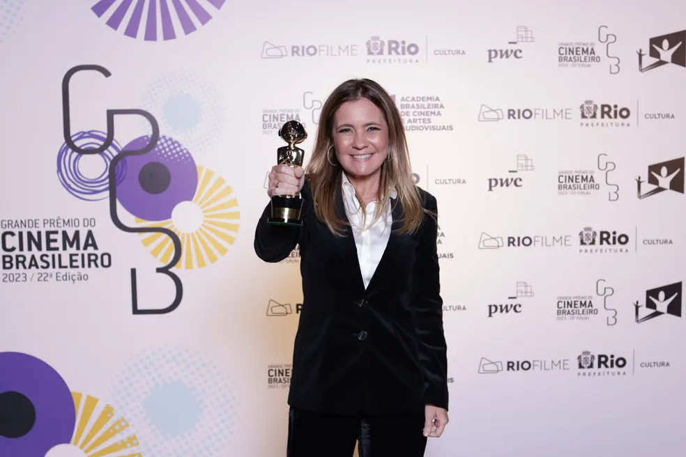

22º Grande Prêmio do Cinema Brasileiro revela em cerimônia os grandes vencedores do ano, veja lista
Na noite de ontem, em uma cerimônia apresentada por Cláudia Abreu e Silvio Guindane na cidade das Artes no Rio, aconteceu a premiação dos melhores do ano no cinema brasileiro.
Dentre as inúmeras produções na disputa, o destaque ficou com Marte Um, segundo longa produzido pelo cineasta mineiro Gabriel Martins, que levou ao todo 8 troféus Grande Otelo, incluindo o de Melhor Longa-Metragem de Ficção.

Ao todo foram anunciados 29 prêmios durante a noite, e o cineasta Vladimir Carvalho foi o grande homenageado da edição, juntamente com o jornalista e crítico Amir Labaki.
Veja agora a lista completa dos vencedores por categorias:
Melhor longa-metragem de ficção:
Marte Um
Melhor longa-metragem documentário:
Kobra auto retrato
Melhor longa-metragem de comédia (voto popular):
Bem-vinda a Quixeramobim
Melhor longa-metragem infantil:
Pluft, o fantasminha
Melhor longa-metragem de animação:
Tarsilinha
Melhor direção:
Gabriel Martins, por Marte Um
Melhor primeira direção de longa-metragem:
Carolina Markowicz, por Carvão
Melhor Atriz:
Dira Paes, por Pureza
Melhor Ator:
Carlos Francisco, por Marte Um
Melhor Atriz Coadjuvante:
Adriana Esteves, por Medida Provisória
Melhor Ator Coadjuvante:
Cícero Lucas, por Marte Um
Melhor direção de fotografia:
Leonardo Feliciano, por Marte Um
Melhor roteiro original:
Gabriel Martins, por Marte Um
Melhor roteiro adaptado:
Angelo Defanti, por O Club dos Anjos
Melhor direção de arte:
Adrian Cooper, por A Viagem de Pedro
Melhor figurino:
Marjorie Gueller, Joana Porto e Patrícia Dória, por A Viagem de Pedro
Melhor maquiagem:
Tayce Vale e Blue, por A Viagem de Pedro
Melhores efeitos visuais:
Pluft, o fantasminha
Melhor montagem:
Marte Um
Melhor som:
Marte Um
Melhor trilha sonora:
Pedro Guedes, Fabiano Krieger e Lucas Marcier, por Eduardo e Mônica
Melhor filme ibero-americano:
Argentina, 1985
Melhor filme internacional:
Elvis
Melhor curta-metragem de animação:
A menina atrás do espelho
Melhor curta-metragem de ficção:
Big bang
Melhor série brasileira documentário:
Pacto Brutal: O assassinato de Daniela Perez
Melhor série brasileira de ficção:
Manhãs de setembro (2º temporada)